Chapter 4 · Part 1 — Back from the Dead
Jack pulled Annie down.
The white figure moved swiftly past them. Then disappeared into the .
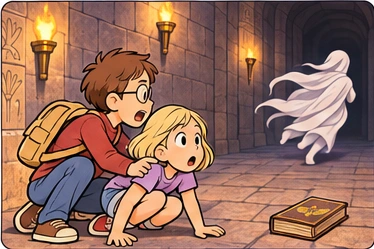
“A ,” said Annie. “Back from the dead!”
“F-forget it,” stammered Jack. “Mummies aren’t alive.” He picked up the Egypt book.
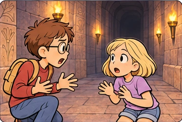
“What’s this?” said Annie. She lifted something from the floor. “Look. The dropped this thing.”
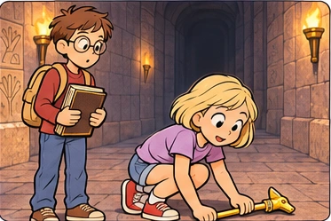
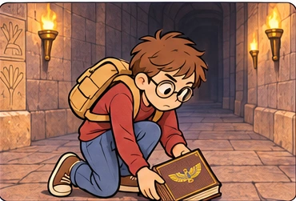
It was a gold stick. About a foot long. A dog’s head was carved on one end.
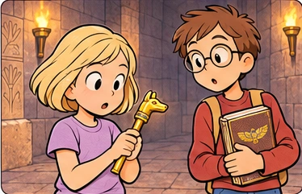
“It looks like a scepter,” said Jack.
“What’s that?” asked Annie.
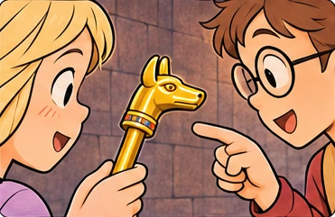
“It’s a thing kings and queens carry,” said Jack. “It means they have power over the people.”
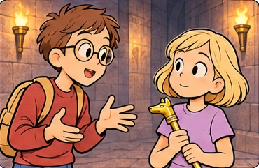
“Come back, !” Annie called. “We found your scepter. Come back! We want to help you!”
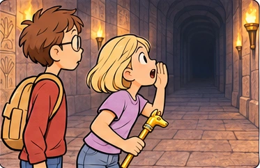
“Shush!” said Jack. “Are you nuts?”
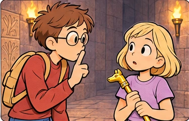
“But the —”
“That was no ,” said Jack. “It was a person. A real person.”
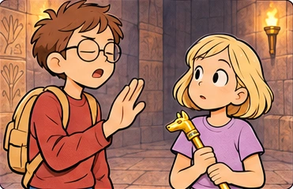
“What kind of person would be inside a ?” asked Annie.
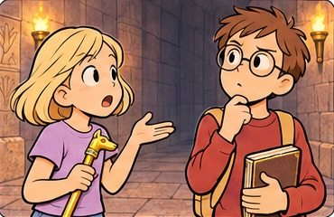
“I don’t know,” said Jack. “Maybe the book can help us.”
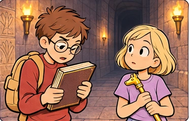
He flipped through the book. At last he found a picture of a person in a . He read:
robbers often carried off the buried with mummies. False passages were sometimes built to stop the robbers.
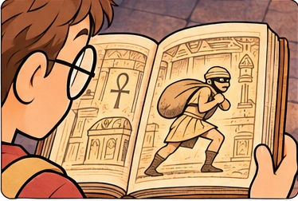
Jack closed the book.
“No live ,” he said. “Just a robber.”
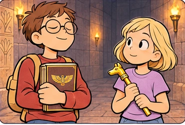
“Yikes. A robber?” said Annie.
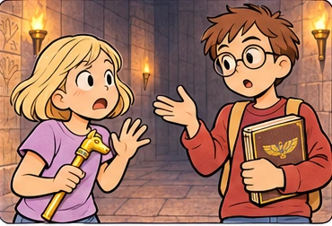
“Yeah, a robber who steals stuff from tombs.”
“But what if the robber comes back,” said Annie. “We’d better leave.”
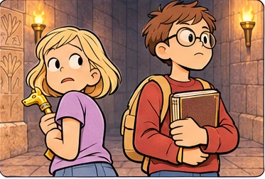
“Right,” said Jack. “But first I want to write something down.”
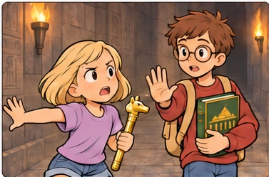
He put the Egypt book into his pack. He pulled out his notebook and pencil.
He started writing in his notebook:
robber
“Jack—” said Annie.
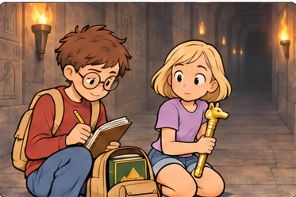
“Just a second,” said Jack. He kept writing:
robber tried to steal
“Jack! Look!” said Annie.
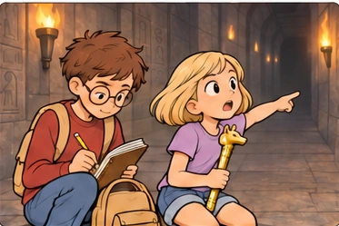
Jack felt a whoosh of cold air. He looked up. A wave of terror went through him.
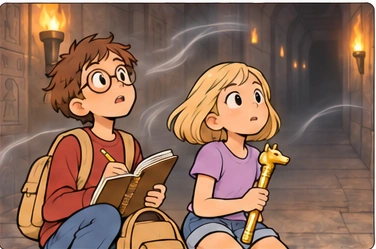
Another figure was moving slowly toward them.
It wasn’t a robber.
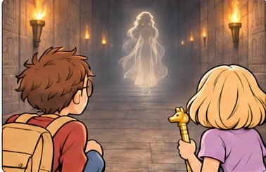
No. It was a lady. A beautiful Egyptian lady.
She wore flowers in her black hair. Her long white dress had many tiny pleats. Her gold jewelry glittered.
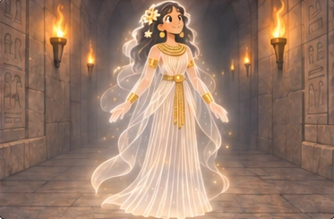
“Here, Jack,” Annie . “Give her this.” She handed him the gold scepter.
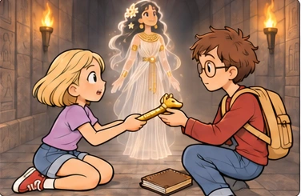
The lady stopped in front of them.
Jack held out the scepter. His hand was trembling.
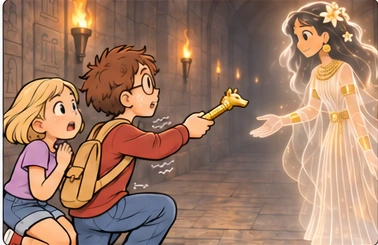
He gasped. The scepter passed right through the lady’s hand.
She was made of air.
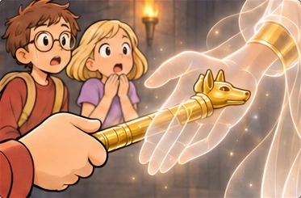